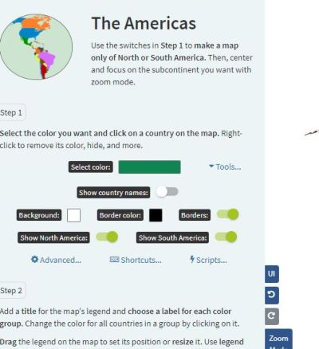

Sites Úteis:
Aqui você encontrará diversos sites que podem ser uma mão na roda para tornar as nossas aulas mais dinâmicas, divertidas e interessantes! São sites que contemplam as mais variadas áreas da geografia, como: climatologia, geografia urbana, geografia agrária, educação ambiental, geografia cultural, geologia, entre outros. Para acessar o site de interesse, basta clicar na imagem ao lado da descrição! Bora navegar?
Tempo de Aprender em Clima de Ensinar:
Um site de climatologia feito por estudantes e professores da Universidade Federal Fluminense. No TACE você aprende climato de uma maneira prática e divertida e leve com vídeos e notícias. A climatologia faz parte do cotidiano, e esse site mostra isso!
Radio Garden:
Que tal escutar músicas em diferentes líguas e sotaques? O site Rádio Garden te possibilita isso! Viaje o mundo sem sair de casa, acesse o Radio e ouça novas vozes, novas culturas, novas opiniões e novas músicas! Radio Garden um mundo nas ondas do rádio!
Camadas Atmosféricas - Univesp:
Já pensou em ensinar a temática de 'Camadas Atmosféricas' de maneira dinâmica e divertida sem precisar gastar muito dinheiro ou quebrar a cabeça produzindo recursos didáticos mirabolantes? Pois bem, esse site possibilita isso a você professor! Poupa tempo, dinheiro e desgaste mental.
Mapa de Conflitos:
Esse é um dos sitema mais generalistas que há nessa lista, aborda conflitos agrários, poluição urbana, saneamento básico, planejamento urbano e diversos temas caros a geografia (que envolvam conflitos). Vale à pena conferir, pois o site é muito rico em conteúdo!
IBGE Educa:
O que esperar do IBGE senão a perfeição? Não é mesmo? Pois é, o maior orgão geográfico brasileiro criou uma plataforma voltada a atender trÊScrianças, jovens e professores. Os sites são um tanto quanto completos e riquíssimos em conteúdo didático. Confira e se surpreenda!
Geografia Visual:
O Geografia Visual é um site de Geografia feito por quem a entende muito bem: um geógrafo! Adriano Liziero traz em seu site uma série de recursos didáticos e ferramentas para quem é professor: vídeos, fotos, textos, simuladores, mapas mentais, jogos e muito mais.
Tudo Geo:
Tudo Geo é um site formado por uma equipe de professores, tanto quanto o nosso! O site contém mapas, questões de vestibular, planos de aula, textos e até mesmo uma lojinha de produtos geográficos! Abrange diversas temáticas dentro da geografia e é incrivelmente intuitivo!
Geografia no Vestibular:
Esse é a alegria dos vestibulandos! um site de geografia totalmente voltado a temáticas recorrentes no vestibular. Contém e-books, questões de vestibular, mapas mentais, videoaulas, memes, resumos e textos debatendo temáticas caras a algumas bancas como a Fuvest e a da Unesp.
Só Geografia:
É um site mais voltado a estudantes, com conteúdos mais simples, mas ainda assim é uma fonte de conteúdos geográficos válida. Possui materiais de apoio, jogos, produtos à venda, textos, mapas, dicionário, curiosidades e muito mais. Vale à pena conferir!
PHET Simulações:
Apesar de não ser um site voltado exatamente a geografia, o PhET pode ser muito útil a professores desta. Isso porque o site - que oferece simulações de processos físicos - possui uma secão voltada às 'Ciência da Terra' e nesta traz simulações de efeito estufa e do sistema solar.
Taste Atlas:
Quem não gosta de comer? E quem não gosta de viajar? Com o Taste Atlas você consegue viajar o mundo e conhecer os pratos típicos de cada país, bem como as suas respectivas receitas, tudo ao alcance de alguns clique em um mapa. É uma experiência divertida e muito saborosa!
Windy:
Eis aqui um site que vai revolucionar a maneira de se dar aulas de climatologia! Monitores furações em tempo real, informações sobre alturas de ondas, tempestades, temperaturas nos oceanos, umidade relativa do ar e muito mais, para Terra inteira, tudo a um clique!
Ancient Earth Globe:
Onde estava a minha cidade há minhões de anos atrás? Você já se questionou?! Pois bem, esse site vem para te ajudar a resolver essa dúvida! O site permite que o usuário veja como era a Terra até de 750 milhões de anos atrás! As aulas de geomorfologia e geologia agradecem!
Map Chart:
Faça mapas sem precisar manusear softwares de geoprocessamento! Com o Map Chart você constrói mapas simples de forma rápida, fácil e e totalmente gratuita! A única desvantagem do site é que você precisa saber um pouco de inglês, mas mesmo o inglês do site é bem básico.